PITTSBURGH COMEDY FESTIVAL
For my senior capstone project, we worked with two clients from the Pittsburgh Comedy Festival to build a dynamic schedule app that will facilitate the debut of the event next August.
I acted as the Project Manager and as a front-end developer, but I was very lucky to have four awesome team members that made the entire project so much fun (check out front-end lead Sheila Chan's website
here).
The schedule is built in Rails, with heavy use of JQuery on the front-end. Some cool things that we implemented include ScrollSpy, easing effect, dynamic filters, accordions, logins via Facebook, SCSS and a custom mobile stylesheets and javascripts.
ERD of the system:
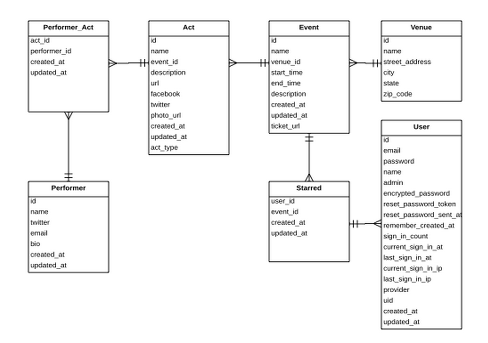
Icons I designed in Illustrator, used to categorize events in PCF:
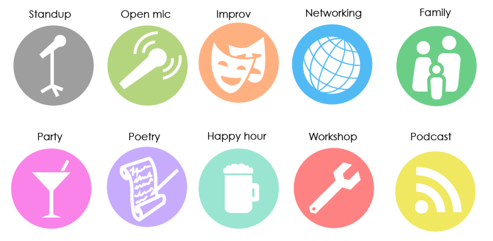
Wireframe mockups:
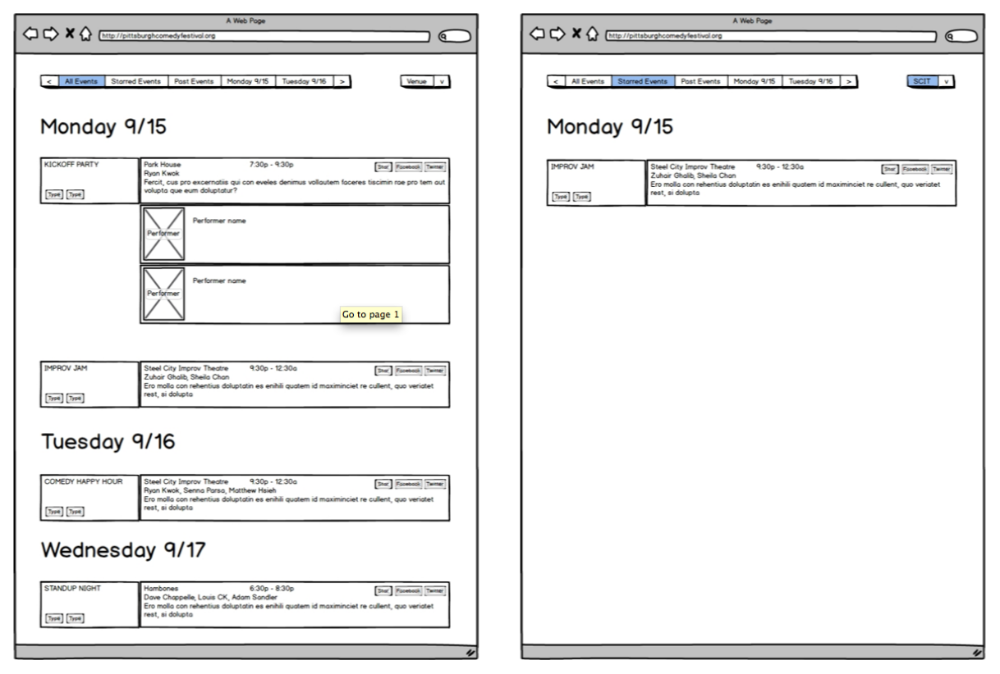
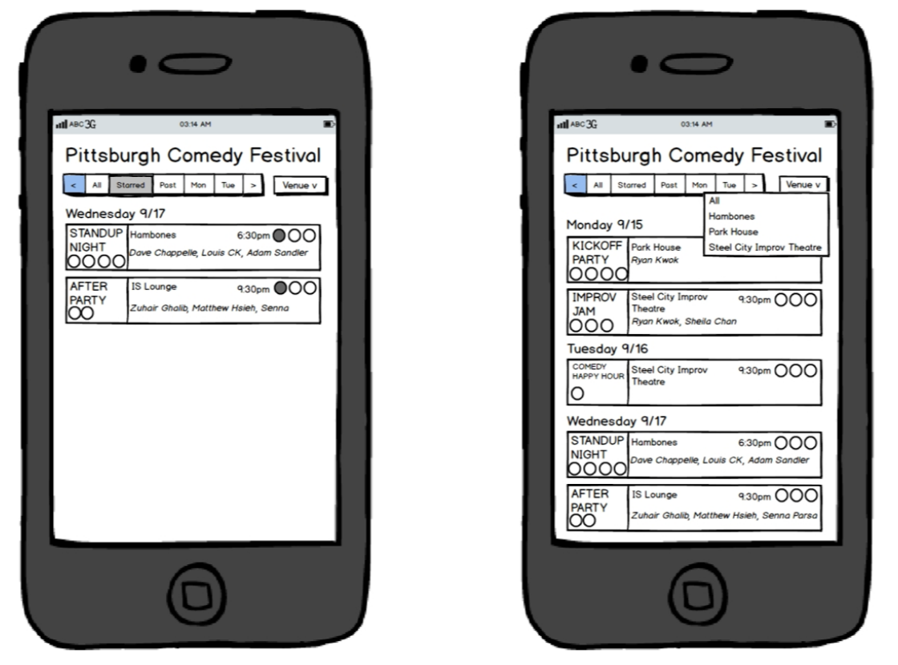
Final product:
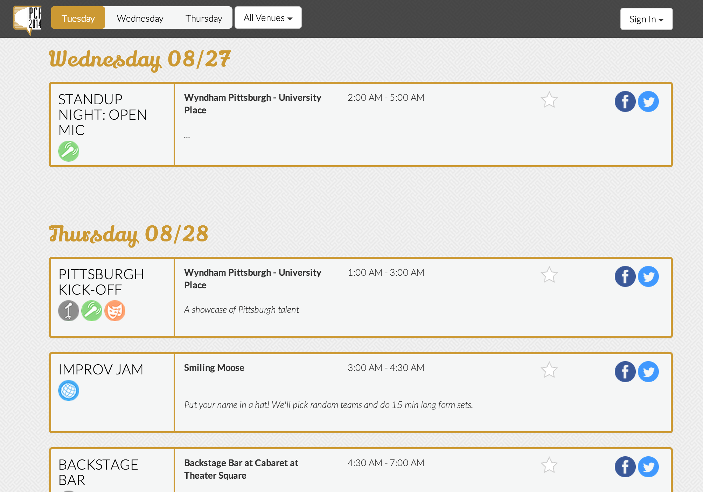
Check out the live demo of our project
here - it's mobile friendly!
BATTLESTOCKS
For my software development course last year, I got together with four friends to create a web application that provides users with a platform to compete with friends in a virtual stock market. Current solutions such as WallStreetSurvivor are too complex, with limitless functions flooding the interface - we saw the need to create something simpler, something for beginners. I was the Project Manager of the team, but also contributed to design, backend and business logic.
Built in Rails, the web app utilizes Bootstrap on the frontend, a PostGreSQL database, as well as a variety of gems. Some cool functions implemented include the use of Yahoo Stocks API, CanCan for authorizations, a live Twitter feed, and logins via Facebook.
ERD of the system:
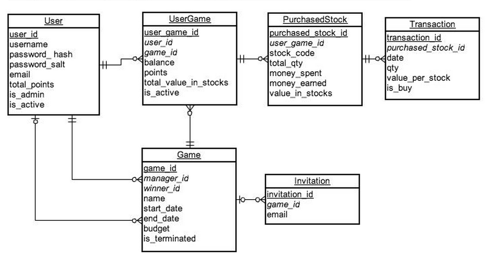
Final product
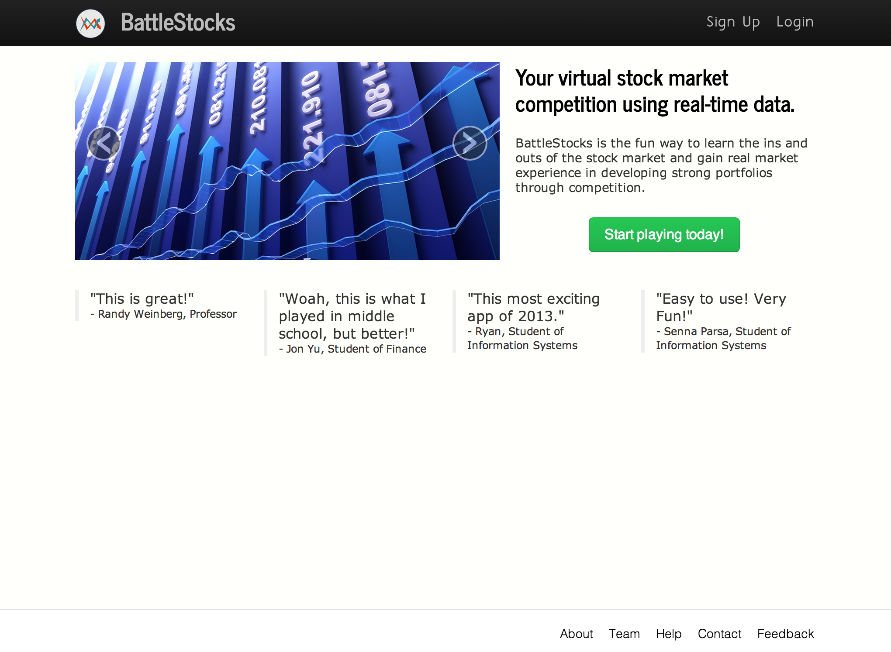
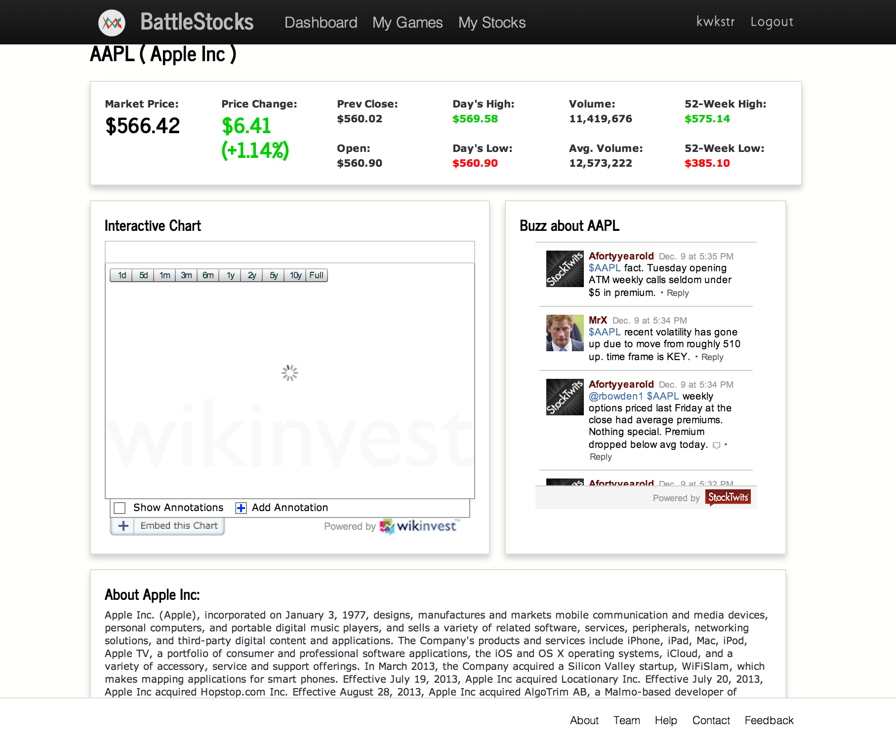
Check out BattleStocks
here!
BARCLAYS
I spent this summer working at Barclays in New York City, with the Credit Risk IT team as a Business Analyst. I was very fortunate to be with the Credit Risk during such an engaging time period, as Barclays was in the midst of reviewing and implementing BASEL III changes into their new risk models.
Through my work in data and SQL analyses, reviewing functional specifications and creating business documentation, I learned an immense amount about derivatives, credit risk, investment banking and the financial services as a whole.
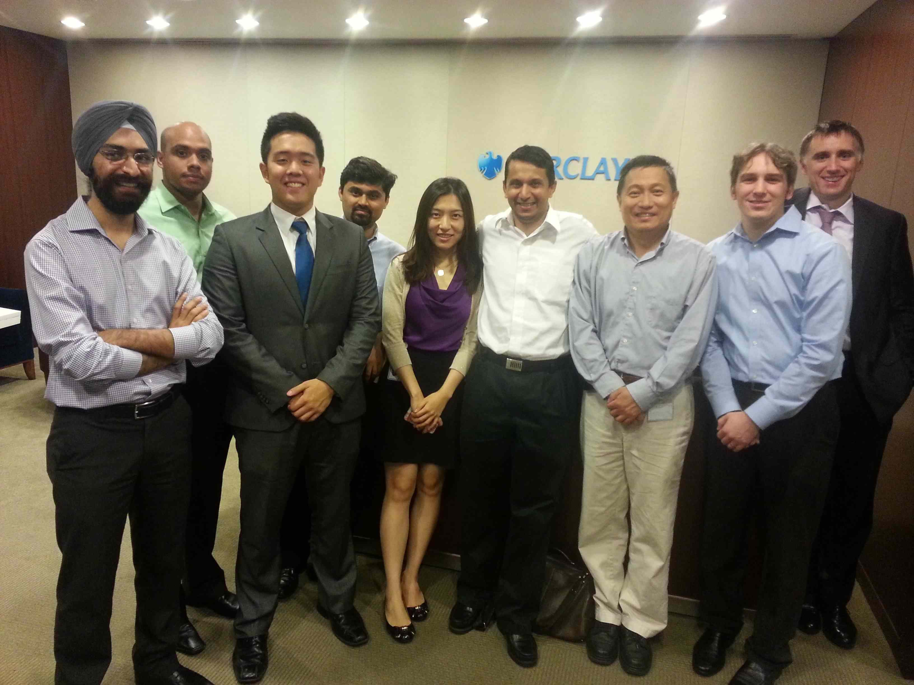
A big thank you to my manager and colleagues, for always being so helpful and making my time at Barclays enjoyable!
INSTACAPTION
This is a small game I created as part of a Distributed Applications course. I used Instagram's API to pull random, trending pictures (legally!) and ask the user to guess it's corresponding caption. The design and interface is quite choppy and plain, but I plan on fixing that up in the next month or so.
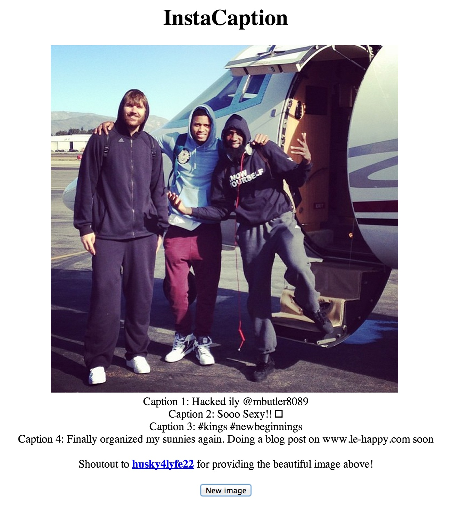
Take a look
here!
COMMUNICATION DESIGN
As someone who has a passion for good design, this easily one of my favorite courses at Carnegie Mellon. The course started with very basic concepts of iterative design, then moved into color theory, grids, typography, hierarchy and infographics. Here are two products from the course I want to highlight:
Magazing spread:
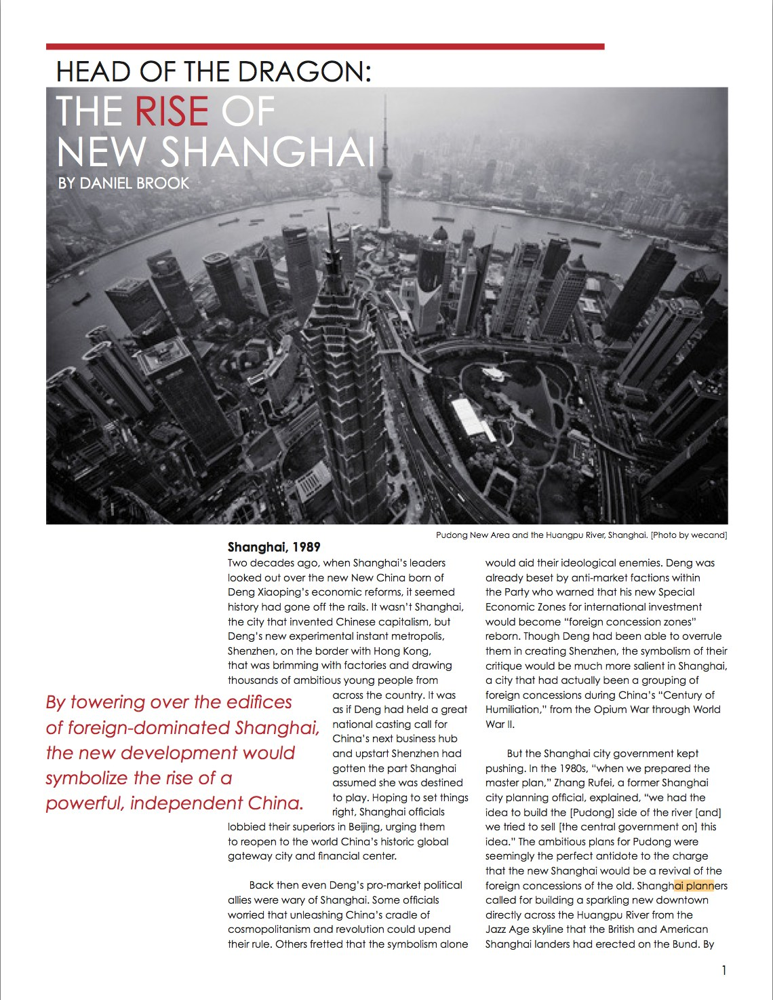
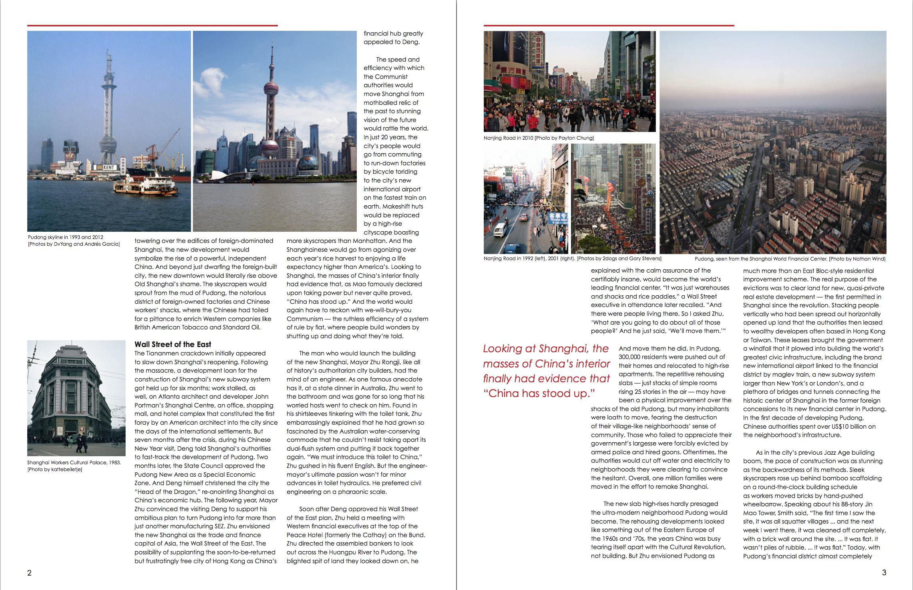
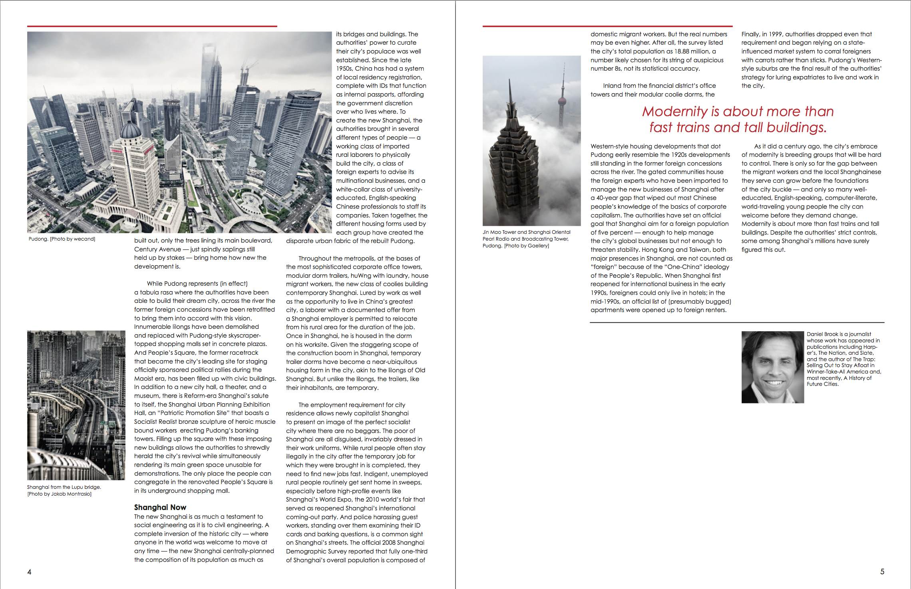
Infographics: Icons, designed in Illustrator
First iteration
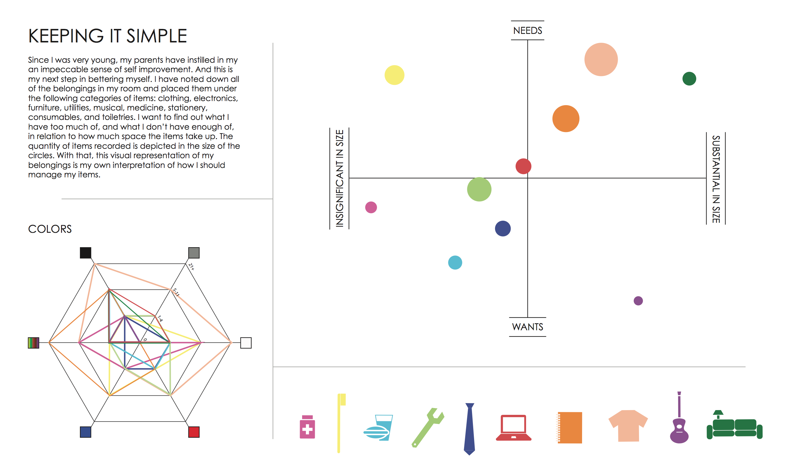
Final iteration
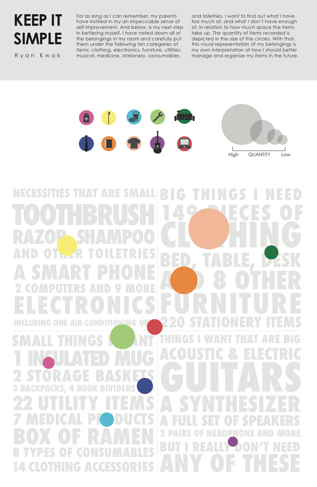